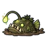
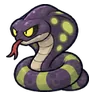
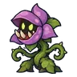
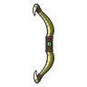
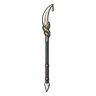
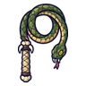
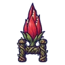
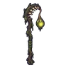

ดงต้นไม้แขวนกรง
ดูบนแผนที่และวิธีไป วางแผนฟาร์ม
ชั้นล่างในแดนใต้สีแดง · Lv 48–62
มอนในแมพ (7)
| มอน | Lv | ในแมพ | ธาตุ | โซน |
|---|---|---|---|---|
 ปลาตกเบ็ดหนอง | 48–62 | ≈41 | น้ำ | ต้นไม้กรงใหญ่ |
| 48–60 | ≈28 | พิษ | ต้นไม้กรงใหญ่ | |
 งูหนองพิษ | 50–62 | ≈23 | พิษ | ต้นไม้กรงใหญ่ |
 ดอกไม้กินคน | 50–62 | ≈13 | ดิน | ต้นไม้กรงใหญ่ |
| 48–56 | ≈12 | พิษ | ||
| ปลาตกเบ็ดหนอง · ร่างแสงม่วง | 50–62 | ≈2 | น้ำ | |
| 68–68 | 1 | พิษ |
≈ จำนวนที่อยู่ในแมพพร้อมกันโดยเฉลี่ย คิดจากไฟล์เกม (จุดเกิดของแมพ × 4 แบ่งตามสัดส่วนของแต่ละตัว) ตายแล้วเกิดใหม่ที่เดิมใน 22 วินาที · ตอนเล่นออนไลน์เซิร์ฟเวอร์เป็นคนเกิดมอน อาจไม่ตรง
อุปกรณ์ที่ดรอปในแมพนี้
| ของ | โอกาสสูงสุด |
|---|---|
| 0.5% | |
| 0.25% | |
 ธนูหนังงูหนอง | 0.25% |
 หอกยาวเขี้ยวงูหนอง | 0.25% |
 แส้งูหนองพิษ | 0.25% |
 คาทาร์ดอกไม้กินคน | 0.25% |
 ตะเกียงเหยื่อปลาตกเบ็ด | 0.24% |
| 0.12% | |
| 0.12% | |
| 0.12% | |
| 0.12% | |
| 0.12% | |
| 0.12% | |
| 0.12% | |
| 0.12% |